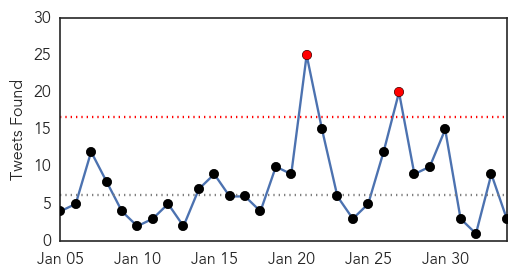
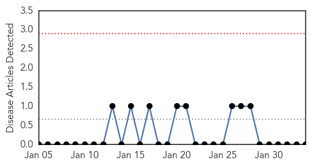

Ebola
30-Day Web Trend
0 alerts, 0 warnings

30-Day Twitter Trend
1 alerts, 0 warnings

Article Locations

Article Confidences

Top Articles:
- 1.000
- MSF Warns Critical Gaps Remain in Ebola Fight
- 1.000
- WHO declares end of Ebola outbreak in Sierra Leone, but neighbor Guinea struggles to end virus
- 1.000
- Ebola has mutated and could be more contagious, experts warn
- 1.000
- First Major Vaccine Trials In Liberia
- 0.999
- Liberia begins clinical trial for Ebola shots as outbreak ebbs
- 0.998
- The Government of Canada announces return of a mobile laboratory from Kailahun, Sierra Leone
- 0.998
- WHO names Ebola response chief
- 0.998
- The Government of Canada announces return of a mobile laboratory from Kailahun, Sierra Leone -- WINNIPEG, Feb. 3, 2015
- 0.998
- Two military medics back in UK for Ebola monitoring
- 0.998
- UK monitoring Two Health Workers for Possible Ebola Exposure
- 0.998
- Only 40% of Ebola Donations Have Reached Affected Countries
- 0.998
- WHO names Ebola response chief
- 0.998
- WHO names Ebola response chief
- 0.998
- Ebola: Sierra Leone officials criticize travel relaxation
- 0.997
- Ebola: showing up the fearmongers
- 0.997
- Ebola Mission Ends? Liberia Shuts Treatment Units, Vaccine Off
- 0.996
- Ebola: UN health agency says large-scale vaccine trials under way in Liberia
- 0.996
- Ebola vaccine trials begin in Liberia
- 0.995
- The Government of Canada announces return of a mobile laboratory from Kailahun Sierra Leone - News Press Release
- 0.994
- Liberia: Ebola: UN health agency says large-scale vaccine trials under way in Liberia
- 0.992
- American doctor and Ebola survivor back "home" in Liberia, fights stigma - Liberia
- 0.991
- Ebola vaccine: safe, but yet to prove potent
- 0.990
- Ebola Vaccines Trial Begins in Liberia
- 0.989
- Another U.K. Military Worker Suspected of Ebola
- 0.989
- Guinea's Grand Imam Pulls No Punches In His Ebola Message
- 0.989
- Russia sends humanitarian aid to Ebola-hit Guinea
- 0.986
- Study: Delays in Ebola funds could have helped virus spread
- 0.984
- Ebola drug trials begin; Liberians divided
- 0.983
- Chinese CDC Experts Conduct Ebola Trainings In Sierra Leone
- 0.982
- Liberian Officials Pleased With Initial Ebola Vaccine Trials
- 0.982
- Sierra Leone officials criticize travel relaxation amidst Ebola decline
- 0.981
- 'Too early' to ease Ebola measures
- 0.980
- AIDS Remains Key Global Health Threat
- 0.980
- Ebola vaccine trial starts in Liberia
- 0.977
- Ebola vaccines testing starts in Liberia
- 0.977
- Only Two-Thirds Of Ebola Donations Reached Affected Countries: Crisis Funding Is Too Slow, Says Study
- 0.975
- Thomas Jefferson University Institute Pasteur the OIV-USA and Thermo Fisher Scientific Establish Collaborative Training Program to Prevent Spread of Ebola Virus in Ivory Coast - News Press Release
- 0.971
- Funding delays may have helped Ebola spread – study
- 0.968
- Crisis control
- 0.964
- Proper use of PPEs in fighting Ebola critical says Health Expert
- 0.963
- Ebola vaccine trials begin in Liberia
- 0.959
- AU Announces Solidarity Conference to Mobilize Support for Post-Ebola Reconstruction in Liberia and other Most Affected Ebola Countries
- 0.953
- Testing of Ebola vaccines starts in Liberia
- 0.950
- Ebola Vaccine Large-Scale Trial Begins In Liberia : LIFE : Tech Times
- 0.947
- WHO Names Bruce Aylward Special Representative For Ebola Response
- 0.946
- Only 40 percent of Ebola donations have been received by affected countries
- 0.939
- Ebola: Sierra Leone officials criticize travel relaxation
- 0.926
- 2 vaccines for Ebola start trials in Liberia
- 0.924
- Too Much Public Health
- 0.921
- UN Mission for Ebola Emergency Response (UNMEER) External Situation Report, 3 February 2015 - Sierra Leone
Showing top 50 articles...
Top Tweets:
- 0.976
- Marked Ebola Retreat In West Africa A Victory Dor Public Health - And Democracy - PoliticusUSA http://t.co/O52VRtASwX ebola EVD
- 0.964
- 'Ebola nurse' hits Christie on vaccines - Politico http://t.co/kTbRnHx9th ebola EVD
- 0.963
- UPDATE 1-Liberia begins clinical trial for Ebola vaccines as outbreak ebbs - Reuters http://t.co/O7VVUiGa8Z ebola EVD
- 0.959
- Marked Ebola Retreat In West Africa A Victory For Public Health - And Democracy - PoliticusUSA http://t.co/4hGvO63l1r ebola EVD
- 0.959
- Marked Ebola Retreat In West Africa A Victory For Public Health - And Democracy - PoliticusUSA http://t.co/398Nc7ZbsH ebola EVD
- 0.955
- Ebola quarantine coming to Fort Monmouth - Asbury Park Press http://t.co/Iq5AyBzZ6F ebola EVD
- 0.903
- Nurse Chris Christie Quarantined For Ebola Goes After Governor On Vaccines - Huffington Post http://t.co/MCEycBGmDS ebola EVD
- 0.899
- What worked in controlling the Ebola outbreak in West Africa http://t.co/HUK7Li1olw
- 0.869
- Vaccin contre Ebola : où en sont les recherches ?@jeune_afrique http://t.co/E5JJcsMUhA
- 0.859
- Lessons From Africa's Hard-Won Victory Over Ebola - Bloomberg http://t.co/RKEzWFMAJN ebola EVD
- 0.796
- Today's news pouch on avianflu avianinfluenza Ebola EbolaResponse MERS birdflu http://t.co/ajCAo8yxlg
- 0.793
- Ebola drug trial in Liberia halted after fall in case numbers - The Guardian http://t.co/i3WfFP6l33 ebola EVD
- 0.757
- Talking Ebola Podcast: @unfoundation President & CEO discusses outbreak & EbolaResponse https://t.co/18KbZFcTh9
- 0.749
- MSF Warns Critical Gaps Remain in Ebola Fight - Voice of America http://t.co/UeYwkrmYj4 ebola EVD
- 0.611
- Clinical trial testing brincidofovir as an Ebola drug halted because of falling case counts, @wellcometrust says. Vaccine trials next?
- 0.608
- Ebola, the epidemic that should never have happened http://t.co/YRl6vUbf2C
- 0.602
- Read an update on the Ebola outbreak in W Africa via: http://t.co/qcaAQ88W3h TackleEbola http://t.co/8mlpWR42jK
- 0.591
- RT: All-female Ebola team makes history in W. Africa. Read more about these heroes: http://t.co/pxJ3XOo9p1 http://t.c…
- 0.581
- Commentary: Ten Reflections On The Ebola Crisis http://t.co/RSWYmCbz49 Ebola GlobalHealth MDGHealth http://t.co/Mrc8W4KaZu
- 0.580
- Thinking of Liberia as they start the first large-scale trials of an experimental Ebola vaccine this week. endebolanow wecanfightthis
- 0.543
- Liberia. UNICEF Ebola Situation Report, 28 January 2015 http://t.co/qdIRBfjAtX
- 0.526
- Ebola by the numbers: 22,444 cases, 8,959 of them fatal, the latest update from says.http://t.co/5GHeJ6uFmJ
- 0.518
- RT: 5 most promising innovations for Ebola response | http://t.co/tFYgbXH1GN GlobalDev
Mold/Fungal
30-Day Web Trend
0 alerts, 0 warnings

30-Day Twitter Trend
0 alerts, 0 warnings

Article Locations

Article Confidences

Top Articles:
-
No articles found for Feb 03, 2015
Top Tweets:
-
No tweets found for Feb 03, 2015